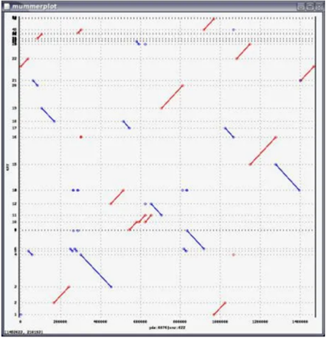

基因组学(Genomics)
JRE安装
打开JAVA网址(java.com), 点击大红按钮Free Java Download，再点击大红按钮Agree and Start Free Download，下载Java安装程序，然后双击安装，跟普通安装程序一样。JAVA(64-bit)默认安装的路径在C:\Program Files\Java。
- 安装完后进行环境配置:
注意：JRE1.8之后安装程序会自动增加环境变量，不需要再自己手动配置环境变量。
打开环境变量的步骤： 右键选中我的电脑，点击属性，再选择高级系统设置，点击按钮“环境变量”。
- JAVA_HOME 变量值：C:\Program Files\Java\jre1.8.0_161
- CLASSPATH .;%JAVA_HOME%\lib（注意前面的.）
- Path 在变量值最前面添加变量值：%JAVA_HOME%\bin;
基因组变异分析
先以参考基因组为参考，利用MUMmer软件的nucmer工具对从头组装获得的多个基因组分别与参考基因组进行共线性分析，使用delta-filter工具提取一一对应的共线性区段(one-to-one alignment block)。再使用show-snps工具进行SNP与indel(
基因组可视化
基因组可视化是指对一个物种基因组各个位置特征的呈现，即利用多种数据可视化技术，以基因组DNA序列为坐标轴，将基因组上基因结构、基因组变异、序列比对等信息数据映射到DNA序列坐标轴上，从而实现对基因组特征的可视化。根据可视化布局的不同，基因组可视化主要分为线性可视化和环形可视化。线性可视化通常以一条DNA序列为坐标轴，各种基因组特征作为一个个独立的轨道(track)对应到DNA序列上。其优点是具有很好的交互性，如可根据用户需要，在染色体到碱基水平之间进行缩放。其缺点是一次只能显示一条染色体的特征，无法反映全基因组水平的特征之间的关联。与之相反，环形可视化能够同时反映全基因组水平的特征之间的关联，但交互性较差。线性可视化代表软件为基因组浏览器与IGV，环形可视化代表软件为Circos。
（1）基因组浏览器是基于网页的基因组浏览工具，目前主要有UCSC genome browser、JBrowse、Gbrowser、NCBI Genome Data Viewer (GDV)等。JBrowse是一款由JavaScript语言开发的基因组浏览器，其具备支持动态界面、响应速度快、能够支持大规模数据集等优点。Jbrowser支持GFF3、BED、FASTA、Wiggle、BigWig、BAM、VCF等多种类型数据的展示。
（2）Integrative Genomics Viewer (IGV)是一款由Java语言开发的交互式基因组数据可视化工具，其支持BAM、BED、GFF、GWAS等多种格式的数据，可用于序列比对、基因组变异、全基因组关联分析等数据展示与辅助分析。
（3）Circos是一款由Perl语言开的基因组数据环形可视化工具包，现丰也广泛用于其他类型数据的可视化。Circos的优点是可以通过一张图对整个基因组特征进行可视化。Circos可对基因组上基因、重复序列、遗传变异等多种基因组特征进行可视化，此外还可以用于比较基因组中同源片段等的展示。
基因组比对分析
比较基因组分析涉及两个或多个基因组之间（也包括同一基因组不同染色体之间）的比对，由此可以获得这些基因组序列之间的保守性、重组、易位等变异信息。常用的基因组比对软件有MUMmer、Mauve等，这些软件都可以进行多个基因组比对分析，并对结果进行可视化。 
图x 基因组比对结果的点阵图
MUMmer(Muximal Unique Match mer)是目前最广泛使用的共线性分析工具之一，最早开发于1999年(Delcher et al., 1999)。它的核心功能是序列比对，相对于BLAST工具，它具有比对速度快、资源消耗少，尤其是对大基因组更有优势。它采用后缀树(suffix tree)算法，具体而言，首先找到两条序列之间给定长度的最大精确匹配，将匹配区域聚类形成较大不完全联配区域，最后向外扩展，形成有空位(gap)的比对结果。MUMmer软件包集成很多工具，如共线性分析、同源序列查找、重复序列鉴定、变异检测等。其核心模块之一为nucmer (nucleotide MUMmer)用于相似性高的核苷酸序列比对，如不同物种基因组间的序列比对。对多个基因组分别与参考基因组进行共线性分析，首先将相邻的最大匹配连起来作为簇(cluster)，然后对簇的两端进行延伸，形成大的匹配区域。比对结果保留了很多信息，一般需要借助delta-filter工具进行过滤，提取一一对应的共线性区段(one-to-one alignment block)，再利用show-coord工具将数据转换成便于阅读的格式，如果电脑安装有gnuplot模块，还可利用mummerplot工具实现比对结果的可视化。
根据序列相似性，点阵图(dot matrix)方法可以在更大尺度（染色体水平）上对同一物种或不同物种间基因组共线性区块进行可视化。例如，以不同染色体上注释基因之间的相似性比较为基础，达到阀值的同源基因对标记为一个点，这样就可以比较不同染色体之间的相似性与进化关系。